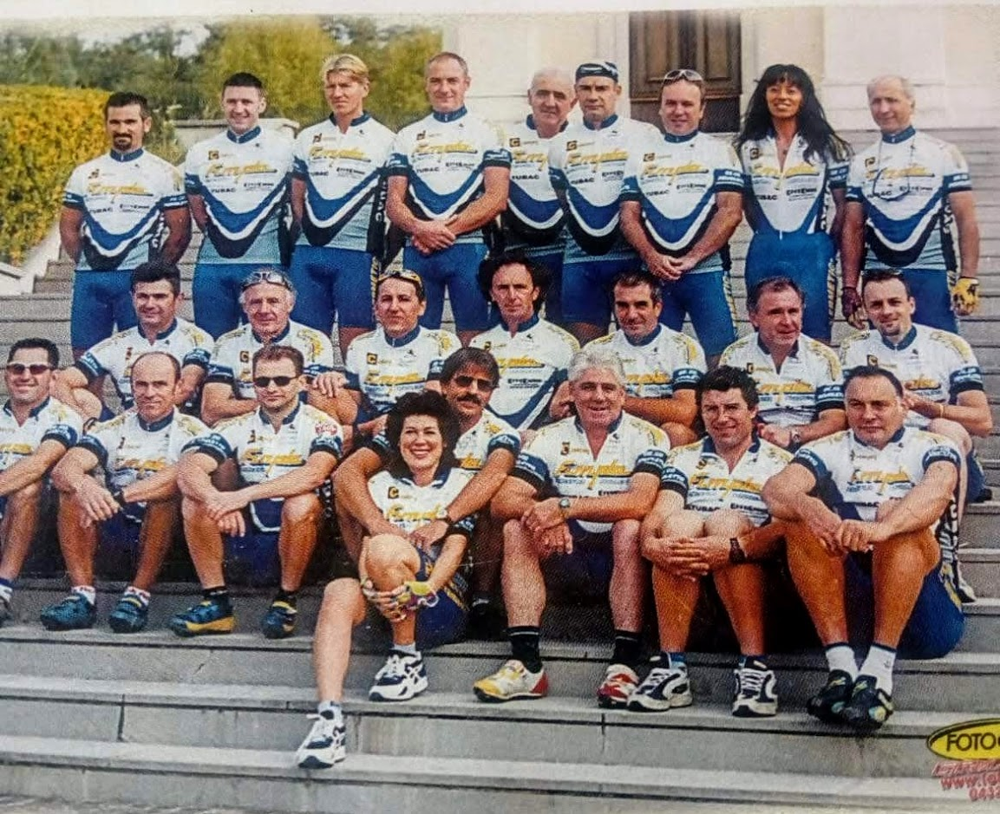

Storia
Ben 22 anni fa
Enzo e
Claudio Genio,
Polo Libero,
Nerino Fiorito,
Fiori Venuti,
Giordano Tarnold,
Stefano Sudaro,
Emilio Sich,
Daniele Ghiraldo e
Angelo Crucil uniti dalla passione per le
due ruote decisero di fondare i
Grigioneri 2000 la Torate. Purtroppo oggi
Giordano Tarnold, uno dei primi padri
fondatori non è più tra noi ed è proprio a lui che i soci del team hanno
deciso di dedicare la gara sociale di mtb che ogni anno si tiene presso
gli splendidi paesaggi di
Savorgnano del Torre.
Passione,
amicizia e
rispetto sono i valori sostenuti dalla
società che con il passare degli anni ha vissuto grandi cambiamenti
contando oggi 44 soci di tutte le età e
coinvolgendo inoltre anche diversi amici simpatizzanti. Ogni sabato e
domenica un nutrito gruppo si riunisce per svolgere attività su strada o
in mtb cercando di affrontare nuovi
sentieri,
dislivelli e macinando un buon numero di
chilometri. Diversi sono i soci che
partecipano alle gare che vengono
organizzate sia in zona ma anche fuori regione con ottimi risultati. Al
di là della passione per le due ruote è la profonda amicizia che lega i
membri del gruppo e danno vita ad un
ambiente accogliente e
piacevole non solo nei momenti in sella alla
propria bicicletta, ma soprattutto nella quotidianità.
Ben 22 anni fa
Enzo e
Claudio Genio,
Polo Libero,
Nerino Fiorito,
Fiori Venuti,
Giordano Tarnold,
Stefano Sudaro,
Emilio Sich,
Daniele Ghiraldo e
Angelo Crucil
uniti dalla passione per le due ruote decisero di fondare i
Grigioneri 2000 la Torate. Purtroppo
oggi Giordano Tarnold, uno dei primi
padri fondatori non è più tra noi ed è proprio a lui che i soci del
team hanno deciso di dedicare la gara sociale di mtb che ogni anno
si tiene presso gli splendidi paesaggi di
Savorgnano del Torre.
